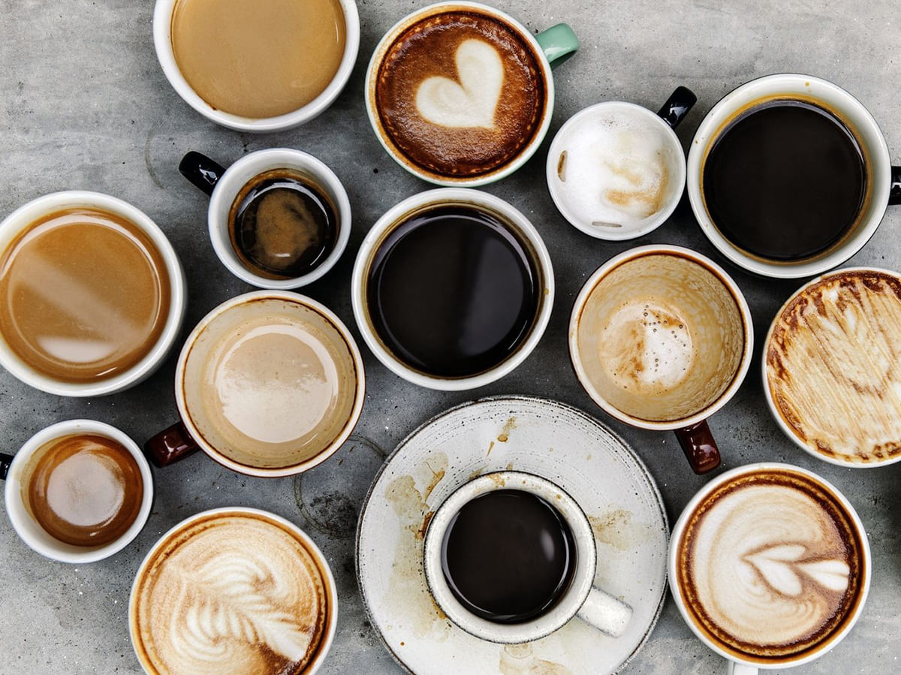

Café de Especialidad Una experiencia única en nuestra cafetería
En nuestra cafetería, el café de especialidad no es simplemente una bebida; es una experiencia completa que combina arte, pasión y dedicación. Nos enorgullecemos de ofrecer a nuestros clientes una selección cuidadosamente curada de granos de café de alta calidad, cultivados en las mejores regiones cafetaleras del mundo. Cada taza que servimos es el resultado de un proceso meticuloso que comienza en el origen y culmina en una experiencia inolvidable para tu paladar.
Calidad y Origen

Trabajamos en estrecha colaboración con productores locales e internacionales que comparten nuestra pasión por la calidad. Nuestros granos son seleccionados por expertos y tostados a la perfección para resaltar sus sabores únicos y características distintivas. Ya sea un café de origen único o una mezcla exclusiva, garantizamos una calidad inigualable en cada taza.
Servicios Personalizados
En nuestra cafetería, entendemos que cada cliente es único. Por eso, ofrecemos una variedad de métodos de preparación, desde el clásico espresso italiano hasta métodos alternativos como Chemex, AeroPress y V60. Nuestro equipo capacitado está siempre dispuesto a asesorarte y recomendarte la mejor opción según tus preferencias y gustos personales.
Variedad de Productos
Además de nuestro café de especialidad, nuestra cafetería ofrece una amplia gama de productos para complementar tu experiencia. Desde deliciosos postres artesanales hasta bocadillos frescos y saludables, cada artículo en nuestro menú ha sido cuidadosamente seleccionado para ofrecerte una experiencia gastronómica completa y satisfactoria.
Nuestra cafetería no es solo un lugar para tomar café; es un espacio donde la calidad, la variedad y la experiencia se unen para ofrecerte momentos memorables día tras día
Te invitamos a descubrir por ti mismo lo que nos hace únicos y a convertirnos en tu destino preferido para disfrutar de café de especialidad y mucho más. ¡Te esperamos con los brazos abiertos y una taza humeante lista para deleitar tus sentidos!
Nuestros productos estrella
Café Ethiopian
Procedente de la región de Yirgacheffe en Etiopía, este café es famoso por sus sabores distintivos que pueden incluir notas cítricas, florales y a veces un toque de bayas.
Café Geisha
Originario de Etiopía, este café se ha popularizado en regiones como Panamá. Es conocido por su perfil de sabor delicado y complejo, con notas florales, frutales y un cuerpo suave
Café Tarrazú
Costa Rica es conocida por producir los mejores cafés de América Central, y Tarrazú es destacada. Esta región suelen tener un perfil de sabor equilibrado con notas de chocolate, caramelo y nueces.